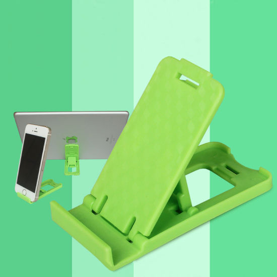
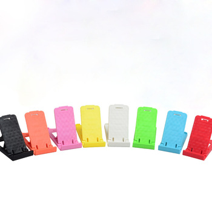
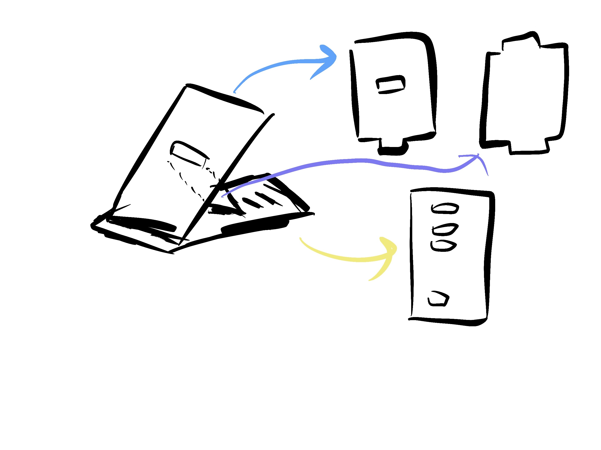
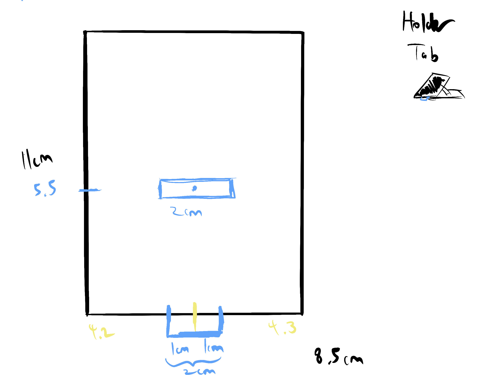
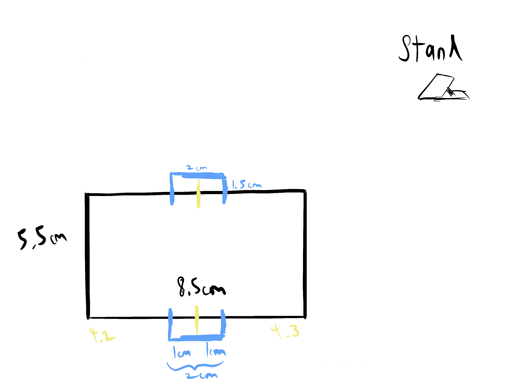
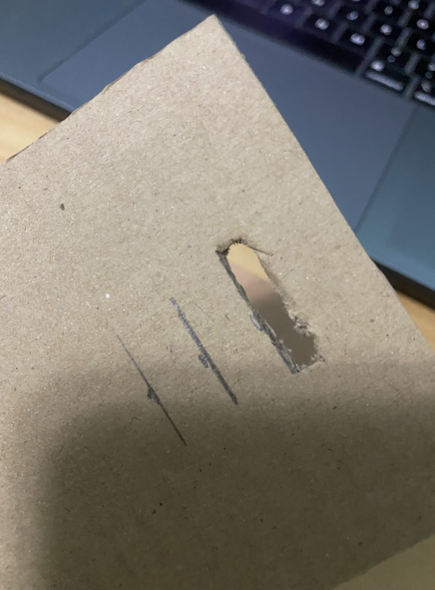
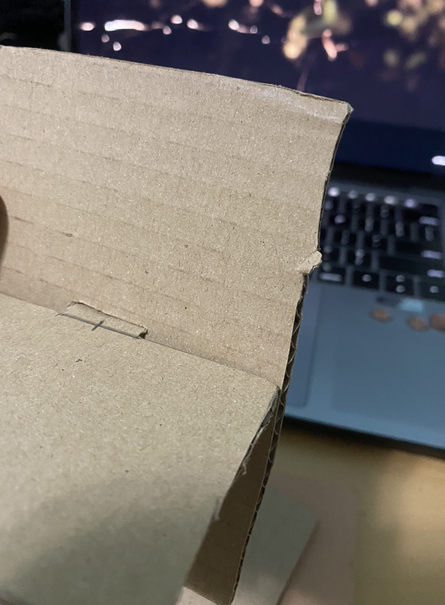
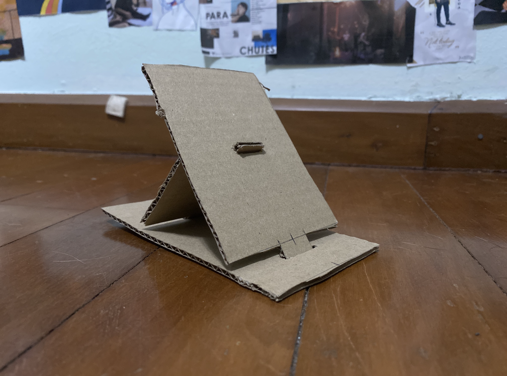
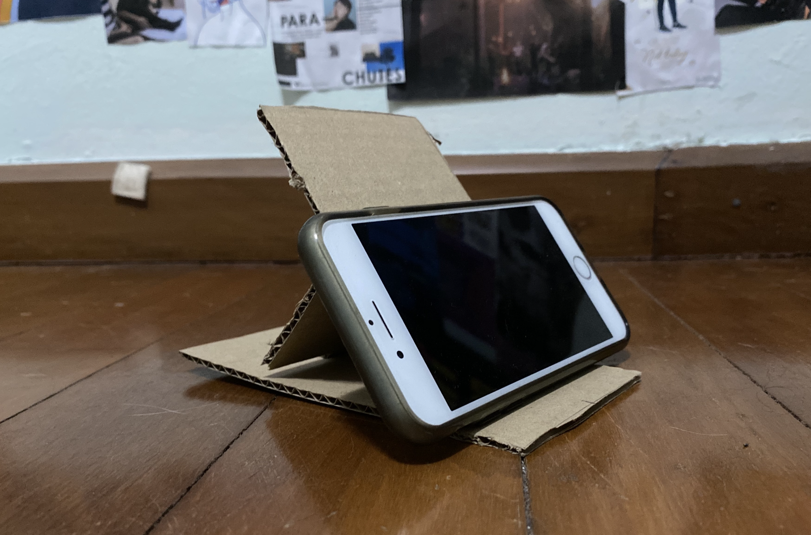

Prototyping, Assignment 1
1. Research
I had to make a prototype for a phone stand. To do that, I needed to look through some research. In class, my classmates and I did a google search for phone stands. These were the things that stood out to us.
|  |  |
One of the things in class we learned was how its good to be inspired and start off by trying to copy what has been done before. These were good examples of working phone stands to try and prototype, thus I (and some of my classmates) went with this.
I drew this together with my classmates. It was the first draft. We had difficulty trying to figure out the perspective and had to re-draw it twice.
This is the second one where we managed to identify three different parts to make and what each part should probably look like.
|  |  |
Here is a more detailed drawing of each part, it’s dimensions and where its slits are supposed to go. I made this to get a more precise prototype later on. I realised the importance of having specific measurements and making sure it coincides with the other pieces. Without precise measuring and consideration, the prototype would not fit and ultimately be a fail.
2. Prototyping Process
Before starting it is worth taking into account different slot sizes/types. This came in very useful when making the prototype as you need to know different attachment types to make something that works/sticks together. Another thing to take note of is the kind of cardboard you are using. It is best to use something with sufficient thickness, I used regular box cardboard (from my redmart delivery), but cork cardboard is good as well (if not better).
While cutting it out, I ran into a few problems. First was my precision in cutting and sharpness of the blade. I did not expect the cardboard to be so thick yet soft. I realised that you have to accept that while you trial and error, you are bound to make some inaccurate/messy cuts (such as the ones below)
My main realisation while making this prototype is that I had misjudged the slots at the back. These slots were intended to be for adjustment sake. However, I did not take into account how far back this would make the stand as well as how thick each slot would be (I had only drawn lines).
Another problem I ran into was that the phone did not have any grip from the front hence it kept sliding down. This is not something I caught in the ideation process as well as my discussion with my classmates. Hence, it was a good discovery and realisation when testing this prototype. This is the video of the prototype, As you can see, the slots of the cardboard pieces fit each other precisely. I also did not make use of glue so that the pieces could move and shift around with ease.
3. Final
However, overall the prototype was successful. The slots sloted each other well and the dimensions proved to be accurate. The images below are the hero shots of the final prototype.
|  |  |
Thank you! That's all :)
Last updated: 25th November 2020